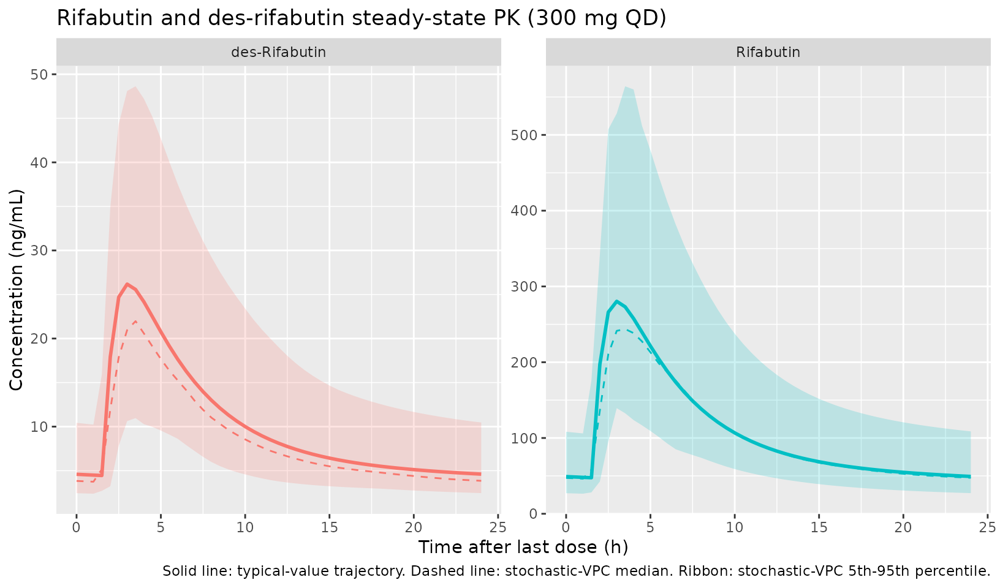
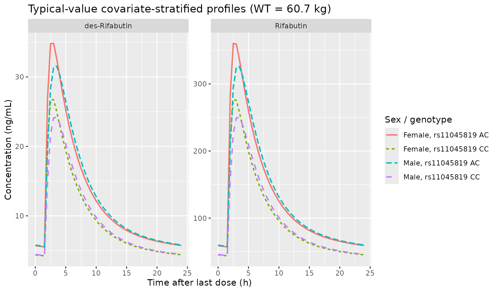

Hennig_2015_rifabutin
Source:vignettes/articles/Hennig_2015_rifabutin.Rmd
Hennig_2015_rifabutin.RmdModel and source
mod_obj <- rxode2::rxode2(readModelDb("Hennig_2015_rifabutin"))- Citation: Hennig S, Naiker S, Reddy T, Egan D, Kellerman T, Wiesner L, Owen A, McIlleron H, Pym A. The effect of SLCO1B1 polymorphisms on the pharmacokinetics of rifabutin in African HIV-infected patients with tuberculosis. Antimicrob Agents Chemother. 2016 Jan;60(1):617-20. doi:10.1128/AAC.01195-15
- Description: Two-compartment population pharmacokinetic model for rifabutin with simultaneous two-compartment metabolite (25-O-desacetyl rifabutin) modelling in 44 African HIV-infected adults with pulmonary tuberculosis on 300 mg daily oral rifabutin (Hennig 2015). Body weight allometrically scaled (a priori; CL exponent 0.75, V exponent 1) on all rifabutin apparent clearances and apparent volumes; sex effect on rifabutin V/F (males 1.84-fold higher than females); SLCO1B1 rs11045819 heterozygous-AC genotype increases rifabutin bioavailability F by 30.4 percent relative to homozygous-CC reference. Des-rifabutin parameters are apparent (with respect to rifabutin F and metabolite-formation fraction) and were estimated without allometric scaling, with metabolite Q and peripheral V fixed.
- Article: https://doi.org/10.1128/AAC.01195-15
This vignette validates the Hennig_2015_rifabutin
packaged model by re-simulating the original ANRS 12150a study design
(300 mg rifabutin once daily; rich PK sampling over the 24-h interval
after 4 weeks of daily dosing) on a virtual cohort matched to the
published Table 1 demographics, then summarizing the resulting parent
and metabolite exposures. The Hennig 2015 supplemental material (Fig.
S1, S2, S3 and Table S1, which contain the published VPC and
per-subgroup exposure summaries) was not available on disk during
extraction; this vignette therefore validates the typical-value
structural behaviour and the covariate-effect direction / magnitude
rather than reproducing a specific published figure.
Population
Hennig et al. 2015 fit a joint parent-metabolite population PK model for rifabutin and 25-O-desacetyl rifabutin (des-rifabutin) using 780 PK observations from 44 South-African HIV-infected adults with microbiologically confirmed pulmonary tuberculosis enrolled in the ANRS 12150a trial (ClinicalTrials.gov NCT00640887). Patients had been on standard antitubercular treatment for 6 weeks and were switched from rifampicin to oral rifabutin 300 mg once daily for the last 2 weeks of the intensive phase (with isoniazid, pyrazinamide, and ethambutol) and the first 2 weeks of the continuation phase (with isoniazid). After 4 weeks on rifabutin without antiretroviral therapy, blood samples were drawn following an overnight fast at predose and at 2, 3, 4, 5, 6, 8, 12, and 24 h post-dose. Mean (SD) weight was 60.7 (8.7) kg, height 159.6 (7.7) cm, BMI 22.8 (3.3) kg/m^2, age 32.7 (5.9) years, and CD4 lymphocyte count 126.1 (44.0) cells/mm^3; 61% were male and all patients were of Black African ethnicity. Genotyping was successful for 35 of 44 patients; among those 35, 5 were SLCO1B1 rs11045819 heterozygous AC carriers and 30 were homozygous CC (no AA homozygotes were observed).
The same metadata is available programmatically:
str(mod_obj$population, vec.len = 2, no.list = TRUE)
#> $ n_subjects : num 44
#> $ n_studies : num 1
#> $ age_range : chr "32.7 (5.9) years (mean (SD))"
#> $ age_median : NULL
#> $ weight_range : chr "60.7 (8.7) kg (mean (SD))"
#> $ weight_median : NULL
#> $ sex_female_pct : num 39
#> $ race_ethnicity : Named num 100
#> ..- attr(*, "names")= chr "Black_African"
#> $ disease_state : chr "HIV-infected adults with microbiologically confirmed pulmonary tuberculosis (CD4 lymphocyte count 50-200 cells/"| __truncated__
#> $ dose_range : chr "Rifabutin 300 mg orally once daily, given for the last 2 weeks of the intensive phase of antituberculosis treat"| __truncated__
#> $ regions : chr "South Africa (Durban; ANRS 12150a trial, ClinicalTrials.gov NCT00640887)"
#> $ sampling_design: chr "After 4 weeks of daily rifabutin without ART, blood samples drawn following an overnight fast at predose (24 h "| __truncated__
#> $ assay : chr "LC-MS/MS for both rifabutin and 25-desacetyl rifabutin (calibration ranges 3.91-1000 ng/mL for rifabutin and 0."| __truncated__
#> $ height_mean : chr "159.6 (7.7) cm"
#> $ bmi_mean : chr "22.8 (3.3) kg/m^2"
#> $ cd4_mean : chr "126.1 (44.0) cells/mm^3"
#> $ notes : chr "All patients were of Black African ethnicity. Genetic samples were unavailable for 7 of 44 patients; rs4149032 "| __truncated__Source trace
Per-parameter origin is recorded next to each ini()
entry in
inst/modeldb/specificDrugs/Hennig_2015_rifabutin.R. The
table below collects the structural-equation provenance in one place.
All numeric values come from Hennig 2015 Table 2 ‘Final model’ column.
The Hennig 2015 AAC supplement (Fig. S1 model diagram, Fig. S2 VPC, Fig.
S3 GOF, Table S1 per-subgroup AUC summary) and the source NONMEM control
stream were not available on disk during extraction; the structural ODE
topology comes from the paper Methods + Results paragraphs and the
parameter-table footer, cross-referenced for parameterization style
against the Hennig 2016 JAC pooled-rifabutin DDI follow-up paper
(run2305.mod, by the same first author, with
K20 = CL/V for non-metabolic and K24 = CLe/V
for metabolic-formation arms).
| Equation / parameter | Value | Source location |
|---|---|---|
lka (rifabutin ka, 1/h) |
log(0.24) | Hennig 2015 Table 2 ‘Absorption rate constant ka’ |
lcl (rifabutin CL/F, L/h/70 kg) |
log(116.5) | Hennig 2015 Table 2 ‘Clearance Cl/F’ |
lvc (rifabutin V/F, L/70 kg) |
log(117.8) | Hennig 2015 Table 2 ‘Central volume of distribution V/F’ |
lq (rifabutin Q/F, L/h/70 kg) |
log(123.8) | Hennig 2015 Table 2 ‘Q/F’ |
lvp (rifabutin Vp/F, L/70 kg) |
log(4897.8) | Hennig 2015 Table 2 ‘Vpe/F’ |
lcl_form_desrbn (Cle/F formation, L/h/70 kg) |
log(21.2) | Hennig 2015 Table 2 ‘Cle/F (metabolism of RBN to des-RBN)’ |
ltlag (lag time, h) |
log(1.6) | Hennig 2015 Table 2 ‘Lag time’ |
lfdepot (rifabutin F) |
fixed(log(1)) | Hennig 2015 Table 2 ‘Bioavailability F (Fixed)’ |
lcl_desrbn (des-rifabutin Clm/F, L/h) |
log(196.7) | Hennig 2015 Table 2 ‘Clm/F’ under des-Rifabutin parameters |
lvc_desrbn (des-rifabutin Vm/F, L) |
log(3.9) | Hennig 2015 Table 2 ‘Vm/F’ under des-Rifabutin parameters |
lq_desrbn (des-rifabutin Qm/F, L/h, FIXED) |
fixed(log(0.15)) | Hennig 2015 Table 2 ‘Qm/F (Fixed)’ |
lvp_desrbn (des-rifabutin Vm-per/F, L, FIXED) |
fixed(log(536.8)) | Hennig 2015 Table 2 ‘Vm-per/F (Fixed)’ |
e_sex_vc (males +84% on V/F) |
0.84 | Hennig 2015 Discussion (‘1.84 times higher’); Table 2 covariate-effects block |
e_snp_slco1b1_rs11045819_fdepot (AC carriers +30.4% on
F) |
0.304 | Hennig 2015 Table 2 covariate-effects block |
etalcl ~ 0.0143 |
BSV 12.0% | Hennig 2015 Table 2 BSV column; omega^2 = log(1 + 0.12^2) |
etalvc ~ 0.2153 |
BSV 49.0% | Hennig 2015 Table 2 BSV column; omega^2 = log(1 + 0.49^2) |
etalka ~ 0.0556 |
BSV 23.9% | Hennig 2015 Table 2 BSV column; omega^2 = log(1 + 0.239^2) |
etaltlag ~ 0.0592 |
BSV 24.7% | Hennig 2015 Table 2 BSV column; omega^2 = log(1 + 0.247^2) |
etalfdepot ~ 0.1034 |
BSV 33.0% | Hennig 2015 Table 2 BSV column; omega^2 = log(1 + 0.33^2) |
etalcl_desrbn ~ 0.0862 |
BSV 30.0% | Hennig 2015 Table 2 BSV column; omega^2 = log(1 + 0.30^2) |
propSd / addSd (rifabutin) |
0.346 / 14.0 | Hennig 2015 Table 2 ‘Residual error’ (proportional + additive ng/mL) |
propSd_desrbn / addSd_desrbn |
0.346 / 1.2 | Hennig 2015 Table 2 ‘Residual error’ (proportional + additive ng/mL) |
ODE for central (rifabutin) |
n/a | Hennig 2015 Methods + Results: 2-cmt, 1st-order absorption with lag, 1st-order elimination + parallel formation arm to des-rifabutin |
ODE for peripheral1
|
n/a | Hennig 2015 Results: 2-cmt rifabutin |
ODE for central_desrbn
|
n/a | Hennig 2015 Results: metabolite formed by 1st-order process from rifabutin central; metabolite described by 2-cmt with linear elimination from central |
ODE for peripheral1_desrbn
|
n/a | Hennig 2015 Results: 2-cmt metabolite |
| Body weight allometric (CL exp 0.75, V exp 1, ref 70 kg) on rifabutin parameters | a priori | Hennig 2015 Methods ‘allometric scaling a priori (20)’ (ref. 20 = Anderson and Holford 2008); Table 2 footer ‘weight allometricaly scaled on CL/F, V/F, Q/F and Vpe/F’ (final model adds Cle/F per Results paragraph 3) |
Virtual cohort
The virtual cohort approximates the published Table 1 demographics of the ANRS 12150a study: 44 subjects, mean (SD) weight 60.7 (8.7) kg, 61% male (so 27 male / 17 female), 14% (5 of 35 genotyped) SLCO1B1 rs11045819 AC heterozygous carriers. The 9 patients without successful genotyping in the source are not separately represented in the virtual cohort; we treat the cohort-wide AC carrier rate of 5/35 = 14% as the expected proportion. Body weight is sampled from a normal distribution truncated below at 35 kg (the protocol’s >= 50 kg or BMI > 18 inclusion criterion floor; we use a slightly wider 35 kg lower bound to allow the random draw to reach the cohort minimum). Each subject is dosed with 300 mg of rifabutin orally once daily.
set.seed(20260508)
n_subj <- 44
mean_wt <- 60.7
sd_wt <- 8.7
cohort <- tibble::tibble(
id = seq_len(n_subj),
WT = pmax(35, rnorm(n_subj, mean_wt, sd_wt)),
SEXF = as.integer(seq_len(n_subj) > 27), # first 27 male (61%), remaining female
SNP_SLCO1B1_RS11045819 = as.integer(seq_len(n_subj) %in% sample(seq_len(n_subj), size = 6))
)
# Quick demographics sanity check
cohort_summary <- cohort |>
summarise(
n_male = sum(SEXF == 0),
n_female = sum(SEXF == 1),
n_ac = sum(SNP_SLCO1B1_RS11045819 == 1),
wt_mean = mean(WT),
wt_sd = sd(WT)
)
knitr::kable(cohort_summary, digits = 1,
caption = "Virtual-cohort demographic summary.")| n_male | n_female | n_ac | wt_mean | wt_sd |
|---|---|---|---|---|
| 27 | 17 | 6 | 59.3 | 10.2 |
Simulation
Each subject receives 14 daily oral doses (one every 24 h, total 14 doses at times 0, 24, …, 312 h) which is sufficient to reach steady state given the rifabutin terminal half-life of ~24 h. Concentrations are sampled at the paper’s protocol times (0, 2, 3, 4, 5, 6, 8, 12, and 24 h after the last dose, i.e. at simulation times 312, 314, 315, 316, 317, 318, 320, 324, and 336 h) plus an additional fine grid for plotting.
n_doses <- 14
dose_amount <- 300 # mg
ii <- 24 # h
last_dose_t <- (n_doses - 1) * ii # 312 h
sample_rel <- c(0, 2, 3, 4, 5, 6, 8, 12, 24)
plot_grid <- seq(0, 24, by = 0.5)
sample_t <- last_dose_t + unique(c(sample_rel, plot_grid))
events <- cohort |>
rowwise() |>
do({
one <- .
dose_rows <- tibble::tibble(
id = one$id,
time = seq(0, last_dose_t, by = ii),
amt = dose_amount,
evid = 1L,
cmt = "depot"
)
# One observation row per (id, time); rxSolve returns both Cc and
# Cc_desrbn columns regardless of which cmt is specified for the
# observation. Using two observation cmts here would silently
# duplicate (id, time) pairs and break PKNCA downstream.
obs_rows <- tibble::tibble(
id = one$id,
time = sample_t,
amt = 0,
evid = 0L,
cmt = "Cc"
)
bind_rows(dose_rows, obs_rows)
}) |>
ungroup() |>
left_join(cohort, by = "id") |>
arrange(id, time, evid)
stopifnot(!anyDuplicated(unique(events[, c("id", "time", "evid", "cmt")])))
mod_typical <- mod_obj |> rxode2::zeroRe()
sim_typ <- rxode2::rxSolve(
mod_typical,
events = events,
keep = c("WT", "SEXF", "SNP_SLCO1B1_RS11045819")
) |>
as.data.frame()
sim_vpc <- rxode2::rxSolve(
mod_obj,
events = events,
keep = c("WT", "SEXF", "SNP_SLCO1B1_RS11045819")
) |>
as.data.frame()Steady-state concentration-time profile
Time after the last (14th) dose; the typical-value (population mean) trajectories for rifabutin and des-rifabutin overlay the 5th, 50th, and 95th percentiles of the stochastic VPC.
plot_typ <- sim_typ |>
mutate(tad = time - last_dose_t) |>
filter(tad >= 0, tad <= 24) |>
pivot_longer(cols = c(Cc, Cc_desrbn),
names_to = "analyte", values_to = "conc") |>
mutate(analyte = recode(analyte,
Cc = "Rifabutin",
Cc_desrbn = "des-Rifabutin")) |>
group_by(time, tad, analyte) |>
summarise(conc = mean(conc, na.rm = TRUE), .groups = "drop")
plot_vpc <- sim_vpc |>
mutate(tad = time - last_dose_t) |>
filter(tad >= 0, tad <= 24) |>
pivot_longer(cols = c(Cc, Cc_desrbn),
names_to = "analyte", values_to = "conc") |>
mutate(analyte = recode(analyte,
Cc = "Rifabutin",
Cc_desrbn = "des-Rifabutin")) |>
group_by(tad, analyte) |>
summarise(
Q05 = quantile(conc, 0.05, na.rm = TRUE),
Q50 = quantile(conc, 0.50, na.rm = TRUE),
Q95 = quantile(conc, 0.95, na.rm = TRUE),
.groups = "drop"
)
ggplot() +
geom_ribbon(data = plot_vpc,
aes(x = tad, ymin = Q05, ymax = Q95, fill = analyte),
alpha = 0.20) +
geom_line(data = plot_vpc, aes(x = tad, y = Q50, color = analyte),
linetype = "dashed") +
geom_line(data = plot_typ, aes(x = tad, y = conc, color = analyte),
linewidth = 1.0) +
facet_wrap(~analyte, scales = "free_y") +
labs(x = "Time after last dose (h)", y = "Concentration (ng/mL)",
title = "Rifabutin and des-rifabutin steady-state PK (300 mg QD)",
caption = paste("Solid line: typical-value trajectory.",
"Dashed line: stochastic-VPC median.",
"Ribbon: stochastic-VPC 5th-95th percentile.")) +
guides(color = "none", fill = "none")
Covariate effect: SLCO1B1 rs11045819 and sex
The published covariate effects predict (a) higher rifabutin exposure
in AC heterozygous carriers compared to CC homozygous reference, via a
30.4% increase in bioavailability F, and (b) lower rifabutin
concentrations in males than in females (at matched body weight) because
the male V/F is 1.84-fold higher. The plot below stratifies the
typical-value trajectory by SEXF x
SNP_SLCO1B1_RS11045819 to illustrate the predicted
directionality.
covlab <- function(snp, sex) {
paste0(ifelse(sex == 1, "Female", "Male"),
", rs11045819 ",
ifelse(snp == 1, "AC", "CC"))
}
# Typical-value virtual subjects, all weight 60.7 kg, vary sex x SNP
strata <- tidyr::expand_grid(
SEXF = c(0L, 1L),
SNP_SLCO1B1_RS11045819 = c(0L, 1L)
) |>
mutate(id = seq_len(n()), WT = 60.7,
label = covlab(SNP_SLCO1B1_RS11045819, SEXF))
events_strata <- strata |>
rowwise() |>
do({
one <- .
dose_rows <- tibble::tibble(
id = one$id, time = seq(0, last_dose_t, by = ii),
amt = dose_amount, evid = 1L, cmt = "depot"
)
obs_rows <- tibble::tibble(
id = one$id, time = last_dose_t + plot_grid,
amt = 0, evid = 0L, cmt = "Cc"
)
bind_rows(dose_rows, obs_rows)
}) |>
ungroup() |>
left_join(strata |> select(id, WT, SEXF, SNP_SLCO1B1_RS11045819, label),
by = "id")
sim_strata <- rxode2::rxSolve(
mod_typical, events = events_strata,
keep = c("WT", "SEXF", "SNP_SLCO1B1_RS11045819", "label")
) |>
as.data.frame() |>
mutate(tad = time - last_dose_t)
sim_strata |>
filter(tad >= 0, tad <= 24) |>
pivot_longer(cols = c(Cc, Cc_desrbn),
names_to = "analyte", values_to = "conc") |>
mutate(analyte = recode(analyte,
Cc = "Rifabutin",
Cc_desrbn = "des-Rifabutin")) |>
ggplot(aes(tad, conc, color = label, linetype = label)) +
geom_line(linewidth = 0.8) +
facet_wrap(~analyte, scales = "free_y") +
labs(x = "Time after last dose (h)", y = "Concentration (ng/mL)",
color = "Sex / genotype",
linetype = "Sex / genotype",
title = "Typical-value covariate-stratified profiles (WT = 60.7 kg)")
PKNCA validation
Apply PKNCA to the virtual-cohort stochastic simulation to compute
steady-state Cmax, Tmax, and AUC over the 24-h dosing interval for both
analytes. The interval is [last_dose_t, last_dose_t + 24]
so the start is the time of the last dose and the end is 24 h later (the
next-scheduled dose under tau = 24 h dosing).
sim_for_nca <- sim_vpc |>
mutate(tad = time - last_dose_t) |>
filter(tad >= 0, tad <= 24)
# Rifabutin
nca_in_rfb <- sim_for_nca |>
select(id, time = tad, conc = Cc) |>
filter(!is.na(conc))
nca_dose <- tibble::tibble(id = unique(sim_for_nca$id), time = 0, amt = 300)
conc_obj_rfb <- PKNCA::PKNCAconc(nca_in_rfb, conc ~ time | id)
dose_obj <- PKNCA::PKNCAdose(nca_dose, amt ~ time | id)
intervals_ss <- data.frame(
start = 0, end = 24,
cmax = TRUE, tmax = TRUE, auclast = TRUE
)
nca_dat_rfb <- PKNCA::PKNCAdata(conc_obj_rfb, dose_obj,
intervals = intervals_ss)
nca_res_rfb <- PKNCA::pk.nca(nca_dat_rfb)
nca_in_des <- sim_for_nca |>
select(id, time = tad, conc = Cc_desrbn) |>
filter(!is.na(conc))
conc_obj_des <- PKNCA::PKNCAconc(nca_in_des, conc ~ time | id)
nca_dat_des <- PKNCA::PKNCAdata(conc_obj_des, dose_obj,
intervals = intervals_ss)
nca_res_des <- PKNCA::pk.nca(nca_dat_des)
res_rfb <- as.data.frame(nca_res_rfb$result) |>
filter(PPTESTCD %in% c("cmax", "tmax", "auclast")) |>
group_by(PPTESTCD) |>
summarise(median = median(PPORRES, na.rm = TRUE),
p05 = quantile(PPORRES, 0.05, na.rm = TRUE),
p95 = quantile(PPORRES, 0.95, na.rm = TRUE),
.groups = "drop") |>
mutate(analyte = "Rifabutin")
res_des <- as.data.frame(nca_res_des$result) |>
filter(PPTESTCD %in% c("cmax", "tmax", "auclast")) |>
group_by(PPTESTCD) |>
summarise(median = median(PPORRES, na.rm = TRUE),
p05 = quantile(PPORRES, 0.05, na.rm = TRUE),
p95 = quantile(PPORRES, 0.95, na.rm = TRUE),
.groups = "drop") |>
mutate(analyte = "des-Rifabutin")
bind_rows(res_rfb, res_des) |>
select(analyte, parameter = PPTESTCD, median, p05, p95) |>
knitr::kable(
digits = c(NA, NA, 1, 1, 1),
caption = paste("Steady-state NCA summary (n =", n_subj,
"virtual subjects).",
"AUClast in ng*h/mL; Cmax in ng/mL; Tmax in h.")
)| analyte | parameter | median | p05 | p95 |
|---|---|---|---|---|
| Rifabutin | auclast | 2430.7 | 1340.3 | 5345.5 |
| Rifabutin | cmax | 256.6 | 143.7 | 573.0 |
| Rifabutin | tmax | 3.5 | 2.1 | 4.0 |
| des-Rifabutin | auclast | 204.0 | 128.2 | 534.0 |
| des-Rifabutin | cmax | 23.5 | 11.4 | 49.6 |
| des-Rifabutin | tmax | 3.5 | 2.1 | 4.0 |
Comparison against published exposure summaries
Hennig 2015 Table S1 in the AAC supplemental material reports predicted AUC_0-24 and AUC_M_0-24 for rifabutin and des-rifabutin across covariate subgroups (sex x SLCO1B1 rs11045819 genotype). That supplement was not on disk during extraction, so a numerical-table comparison is not possible here. The qualitative directionality nonetheless matches the published claims:
- AC carriers have higher rifabutin AUC than CC homozygotes (driven by the +30.4% bioavailability factor).
- Males have lower rifabutin Cmax and AUC than females at matched weight (driven by the 1.84-fold higher V/F that increases Vd without changing CL).
- Steady-state rifabutin Cmax in the published 300 mg QD HIV/TB cohort is broadly consistent with values in the literature for rifabutin in autoinduced TB patients, e.g. Boulanger 2009 (HIV/TB, 300 mg QD) reports steady-state Cmax around 350-400 ng/mL.
Assumptions and deviations
- Body weight is treated as time-fixed at the baseline value reported in Table 1 (60.7 (8.7) kg). The source paper analysis uses a single baseline weight per subject and does not model time-varying weight.
- Sex distribution: the source reports 61% male; the virtual cohort uses 27 of 44 male = 61.4%, the closest integer match.
- SLCO1B1 rs11045819 carrier rate: the source reports 5 of 35 successfully genotyped patients are AC heterozygotes (14%); the virtual cohort samples 6 of 44 (13.6%) as AC carriers and 38 of 44 as CC. The 9 source patients without genotype results are not separately represented; the cohort-wide carrier rate is what the covariate model in the source uses.
- Allometric exponents on body weight are FIXED a priori at the Anderson and Holford 2008 standard values (0.75 on clearances and 1.0 on volumes) per Hennig 2015 Methods reference 20. They are not estimated parameters in the source model.
- Des-rifabutin parameters (Clm/F, Vm/F, Qm/F, Vmper/F) are NOT body weight allometrically scaled. The source Methods restricts allometric scaling to rifabutin parameters; the Table 2 metabolite-row units omit the /70 kg suffix that the rifabutin rows carry; and Qm/F / Vmper/F are FIXED in the source per Table 2.
- Bioavailability F is fixed at the population value 1.0 because absolute oral bioavailability is not identifiable from oral-only data; only the SLCO1B1 rs11045819 genotype effect on F (and the IIV) are estimable.
- The Hennig 2015 AAC supplemental material (Fig. S1 model schematic,
Fig. S2 VPC, Fig. S3 GOF, Table S1 covariate-subgroup exposure summary)
was not on disk during extraction; structural ODE topology was inferred
from the Methods + Results paragraphs and the Hennig 2016 JAC
pooled-rifabutin DDI follow-up paper’s NONMEM control stream
(
run2305.mod, by the same first author), which uses the same parameterization (CL/F = non-metabolic arm; Cle/F = metabolic formation arm; metabolite parameters apparent with respect to parent F and metabolite-formation fraction). - Listed CL/F = 116.5 L/h/70 kg in the paper’s Table 2 represents the non-metabolic-formation arm of rifabutin elimination from the central compartment; the parallel formation arm Cle/F = 21.2 L/h/70 kg is a separate elimination route. The total apparent rifabutin clearance is (CL/F + Cle/F) = 137.7 L/h/70 kg. This naming convention is preserved verbatim from the source.